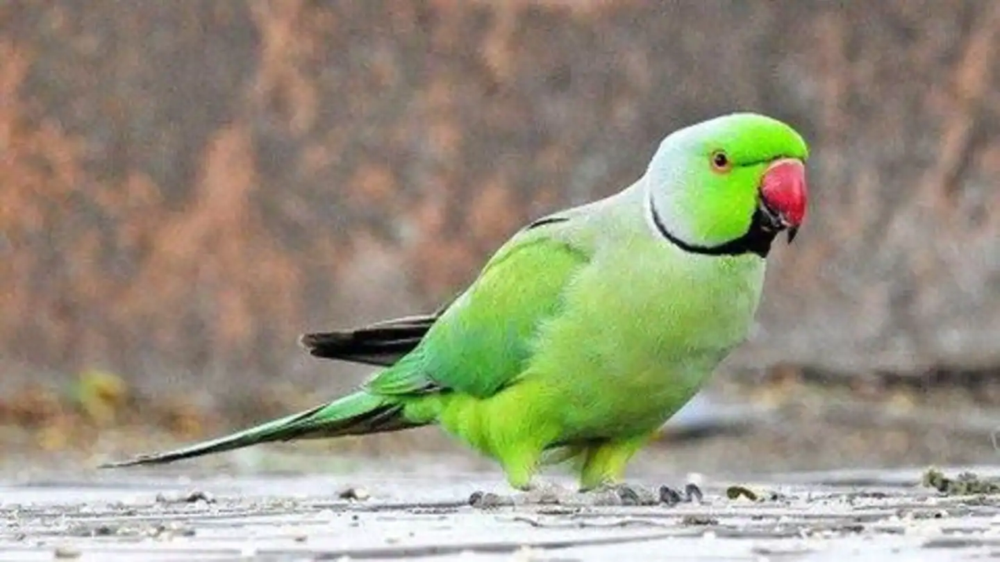

The domestic canary, often simply known as the canary (Serinus canaria forma domestica[5]), is a domesticated form of the wild canary, a small songbird in the finch family originating from the Macaronesian Islands (the Azores, Madeira and the Canary Islands).
Parrots, also known as psittacines are birds of the roughly 398 species in 92 genera comprising the order Psittaciformes , found mostly in tropical and subtropical regions.